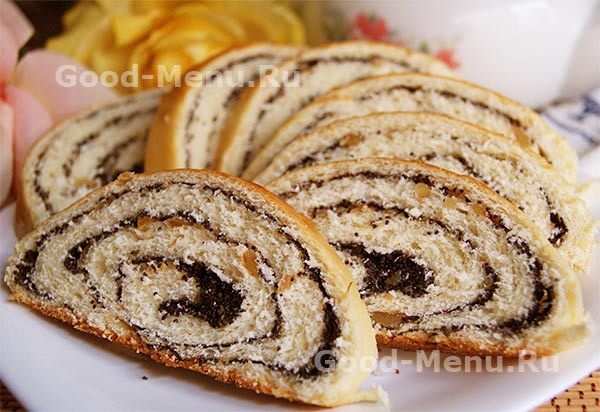

Рулет с маком

Это отличное блюдо для большой семьи, рулет получается щедрым, румяным, с любимой многими маковой начинкой.
ДЛЯ ТЕСТА:
- Мука пшеничная 500 г
- Яйцо 3 шт
- Сахар 85 г
- Дрожжи свежие 20 г
- Молоко 100 г
- Масло сливочное 60 г
- Соль 1 щепотка
- Яичный желток для смазывания
ДЛЯ НАЧИНКИ:
- Мак 150 г
- Сахар 125 г
- Яичные желтки 2 шт.
ШАГИ:
- В теплом молоке развести дрожжи и 200 г муки, дать подойти 20 минут.
- Смешать яйца с сахаром, ввести в опару, добавить оставшуюся муку, соль и вымесить крюком тесто. Влить
растопленное сливочное масло, вымешивать тесто до гладкости, при ненобходимости добавить 2-3 столовые ложки муки. Поставить тесто в теплое место
на 1,5 часа, или пока оно не увеличится в объеме в два раза.
- Мак залить кипятком, оставить на 30 минут, затем воду слить, мак просушить или измельчить в ступке или блендере.
Сахар растереть с желтком, добавить мак и перемешать.
- Тесто раскатать в прямоугольник толщиной 5-6 мм, намазать маковой начинкой и свернуть рулетом, выложить на противень.
Накрыть полотенцем. оставить на 20-30 минут, затем смазать желтком и выпекать при температуре 170 градусов 35 минут.
Совет:
Чтобы рулет был мягким, сразу после выпечки накройте его влажным полотенцем.